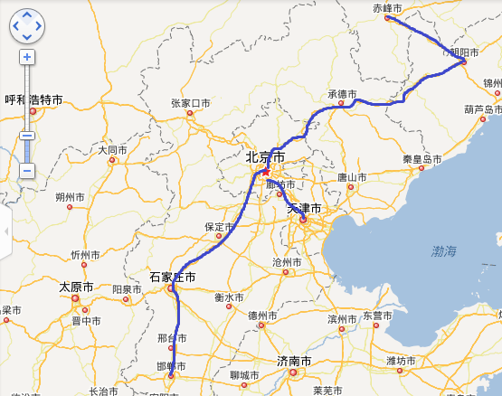
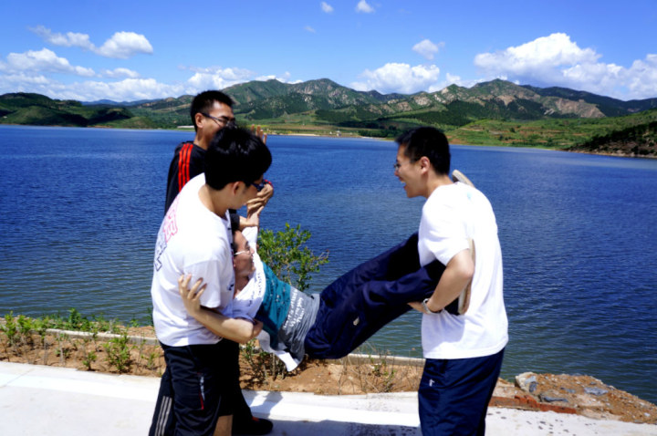

开始博客时候说要每周写一些博客，结果和前几次一样第二周就断掉了……为了避免又荒废掉博客，只好再水一篇技术无关的，写一写最近发生的事。
毕业旅行
最近最重要的事就是跟同学去了毕业旅行。因为各种事情都赶到这个时间了，所以最后过程不可谓不艰辛。

先是27号晚上课题组吃饭，又吃了不少生鱼片……然后28号去邯郸看女朋友，在邯郸玩2天，然后30号早晨一早回北京，中午11到回了一下宿舍，下午1点又坐城际回家同学聚会，下了火车直接拉着箱子去吃饭。1号中午回北京，没回学校直接和志颖邈邈在北京北站一起上火车去赤峰。几天的折腾下来确实相当的累，不过幸运的是补到了卧铺票，晚上睡了几个小时。
在去往赤峰的火车上遇到了一个叔叔，带了一个似乎不会说中文的年轻的女人。晚上下车时候听到了女人拼写了“V-i-e-t-n-a-m”。莫非是遇到了传说中的……越南新娘？
到了赤峰市的天义，打车去找大部队。赤峰前一天刚刚下过雨，所以路极其难走，出租车走到一半就把我们放下了，换成了一个面包车。不过最后还是顺利的找到了大部队。
找到后本想去漂流，但因为水流太急，只能回来。路过了一个水库，景色相当不错，照了几张照片，下来划了划船，拍了很不错的几张照片。

下午一直在坐车，长达5个小时，比较无聊，期间体验了草原的大雨。晚上在赤峰市吃了蒙餐，很是丰盛。
第二天去了草原，又是长达几个小时的车。不过草原的景色相当的漂亮，所谓的石林也确实有些怪石值得一看。
第三天回京。回程的火车是硬座，不过打牌、玩三国杀过的很快。晚上11点到北京，打车回宿舍时还发生了写小插曲，因为最后剩下了5个人一起走，所以只能打黑车，黑车要价很高，本来说好到五道口50，听说到清华之后忽然加到了70。我想起了一个划价的方法，让他先到五道口，快到了之后让他开，按每公里5块，给10块，开到2km我们就下车。于是他最后就妥协到东北门60，呵呵。
计算机系的实习生
回京之后就是各种没心没肺的玩，结果差点误了事。
很久很久之前给网络中心的老师发了封邮件申请实习生，一直没有音信，没想到竟然收到了老师的邮件让我过去面试。而当时竟然因为打游戏没及时收邮件给错过了。赶紧weibo上联系了老师，赶往面试。
面试的过程相当水，没有什么技术性的问题，只是了解了一下我的背景，最后结束时我都不敢相信就这么简单的就结束了。不过想来搞安全也确实不需要什么基础吧。之后认识老师手下的硕士生，之后就要靠这位学长带了，一个小巧合是学长毕设竟然用到了polipo，这个东西的源码我是一直想看没看懂。。。
第二天办了手续，成为了实验室的实习生，竟然还签了实习合同。合同只到13年底，也就是说要抓紧学习了！
毕业没有感
快毕业了，确实没什么感觉，除了感觉手续很复杂。毕业晚会那天女朋友正好来北京，我们一起看了晚会，算是个小惊喜。毕业晚会一点不煽情，和学生节没啥区别。对大学的同学还是很有感情的，比初中高中都要深一点，但是还是没有特别的舍不得的感觉，可能我就这样吧。
有时候想想大学四年，好像什么都没有做，兴趣上转了一圈，又回到了当初不想搞的安全。成绩上拿不出什么能看的东西，只能说勉强够用。感情上倒还不错，是我当初怎么想不到的。给大学整体打分的话，和平时的各种考试一样，还算不错但离优秀很远。未来嘛，想想就头大。
毕业了，要学的却又太多。最舍不得的还是学生的这个身份。